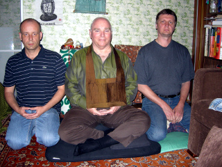

(См. также наш русский сайт)
 Beginners and those with already established Zen practice, welcome to our young and modest Moscow Zen Center to practice Japanese Soto Zen or just have together a cup of tea. Practice is free, we welcome donations for tea.
We are famous for our largest Russian city, founded at 1147, our computer learning program and could become even more famous with your way to bring Zen into our everyday life.
You don't need to have some esoteric Buddhist experience to come here. If you don't know something, just pay attention to the advices of people, who started to practice Zen before you.
Address: Moscow, ul.Krasnobogatyrskaya, house 27, apartment 106 (15 minutes from subway station "Preobrazhenskaya Ploshad")
Zazen: Monday, Wednesday - 7:00pm
Club day: Saturday, 5-8pm
Phone: +7(495)963-3916, Ilya Email: softkey@rambler.ru